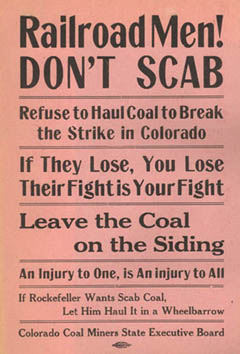
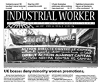

Submitted on Sat, 06/23/2007 - 2:10am
 Hashmeya (pictured, right, with a written message of thanks to the IWW for its solidarity with workers in Iraq) is a native of Basra and a 25-year veteran in the Iraqi Department of Electricity. While she is the first woman to rise democratically from the ranks to represent a national Iraqi labor union, she emphasizes that she is not alone - that there are many dedicated and committed union women in the forefront of the Iraqi labor movement.
Hashmeya (pictured, right, with a written message of thanks to the IWW for its solidarity with workers in Iraq) is a native of Basra and a 25-year veteran in the Iraqi Department of Electricity. While she is the first woman to rise democratically from the ranks to represent a national Iraqi labor union, she emphasizes that she is not alone - that there are many dedicated and committed union women in the forefront of the Iraqi labor movement.
Ten days ago, two top leaders of Iraq's labor movement, Hashmeya Muhsin Hussein , President of the Electrical Utility Workers Union, General Federation of Iraqi Workers (EUWU-GFIW))and Faleh Abood Umara, General Secretary of the Federation of Oil Unions (FOU) spoke throughout the San Francisco Bay Area as part of an Iraqi labor tour of the US. They spoke urgently of Iraqi labor's unified demand for the end of the brutal US occupation and sought for the support of US labor in rejecting the imposition of the Oil Law which the US is using to force the surrender of Iraqi oil resources to foreign corporations as the price of their withdrawal.
Submitted on Thu, 06/21/2007 - 3:50am
New York, NY- Less than three months after the National Labor Relations Board hit Starbucks with a 30-count legal complaint, the federal agency has once again accused the coffee giant of breaking the law in a continuing effort to undermine the IWW Starbucks Workers Union [StarbucksUnion.org]. Based on an independent investigation into the company’s conduct, the Board has alleged that Starbucks fired outspoken union barista, Isis Saenz, for protected organizing activity.
“It’s beyond dispute now that Starbucks is waging one of the most relentless anti-union operations in the United States today,” said Stuart Lichten, the IWW’s attorney on the case. “If Wal-Mart has a soul mate in the union-busting arena, it’s Starbucks.”
Submitted on Tue, 06/19/2007 - 3:27am
Bristol train driver, Patrick Spackman, sacked for swearing by First Great Western, has referred the Morning Star to the Press Complaints Commission (PCC).
On 6 June the Morning Star, self-styled "daily paper of the left", reported Mr Spackman's sacking for swearing, which the company claimed had been "threatening."
However, two days later, the paper claimed that he had, in fact, been sacked for "violent harassment in the workplace against a respected senior lay union representative."
Mr Spackman responded: "This is completely untrue. I complained to the Morning Star but haven't even had the courtesy of an acknowledgment from them. So I've referred the matter to the PCC who now have a copy of my dismissal letter which clearly shows why I was sacked. I look forward to a public apology and retraction from the Morning Star."
Mr Spackman, who intends to take his dismissal to employment tribunal, is being represented by the Industrial Workers of the World, the union generally referred to as "the Wobblies."
A union spokesperson commented: "Someone seems to have set the Morning Star up here. But a bit of basic checking would have avoided the problem. Needless to say, the 'union representative' referred to by the Morning Star is not a member of the IWW".
Submitted on Tue, 06/19/2007 - 1:43am
Headlines:
- Solidarity Never? BC teachers' fed locks out staff
- Mexican unions move toward independence
- Latin American solidarity must be grassroots, not government-led
Featured Articles:
- Four pages of May Day coverage!
- Review: Unions can help elect Democrats, but what for?
- Australian Labor Party no working class saviour
- Tightline Johnson conclusion: The Long Road
Download a free
PDF copy of this issue.
Submitted on Sat, 06/16/2007 - 3:05am
 Starbucks to Pay Undisclosed Amount and Offer Reinstatement
Starbucks to Pay Undisclosed Amount and Offer Reinstatement
Chicago, IL (06/14/2007)- Starbucks has agreed to reinstate Chicago barista Gloria Sykes and pay her a confidential amount to settle charges filed with the National Labor Relations Board earlier this year. Starbucks fired Sykes after she told her store manager that employees would reach out to the IWW Starbucks Workers Union (SWU) if management did not address age discrimination and work schedule issues. The Starbucks manager responded in clear violation of federal law that any talk of the Union was prohibited and would result in termination. Ms. Sykes, 55, was undeterred and subsequently did join the SWU [StarbucksUnion.org].